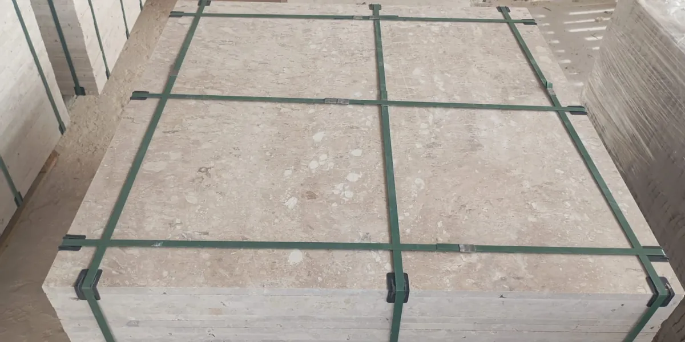
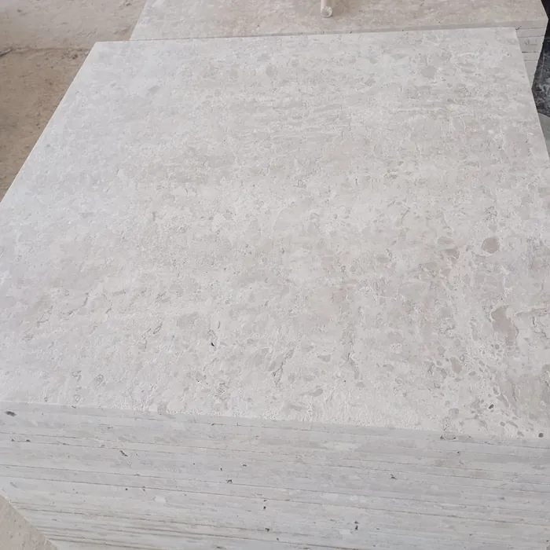
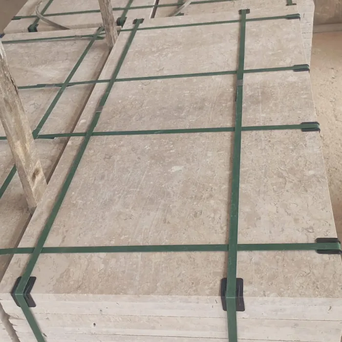
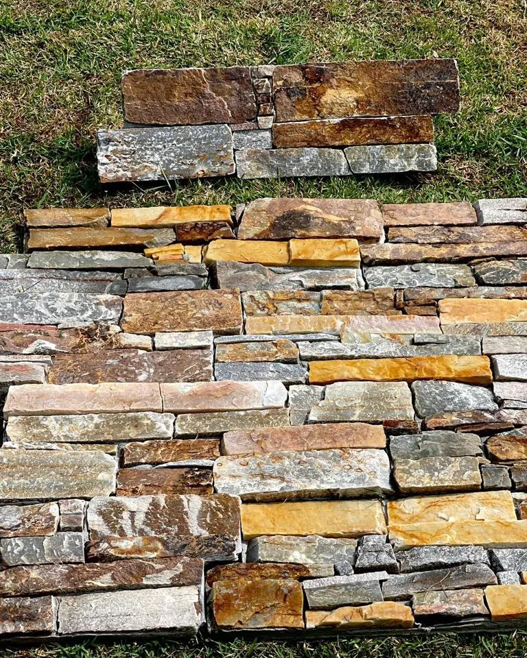
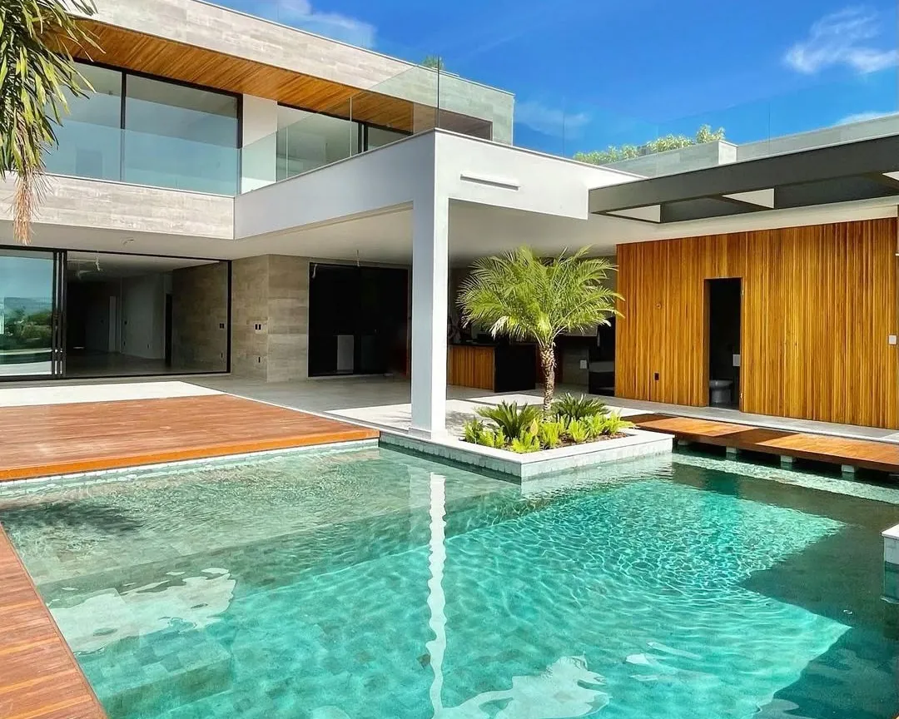
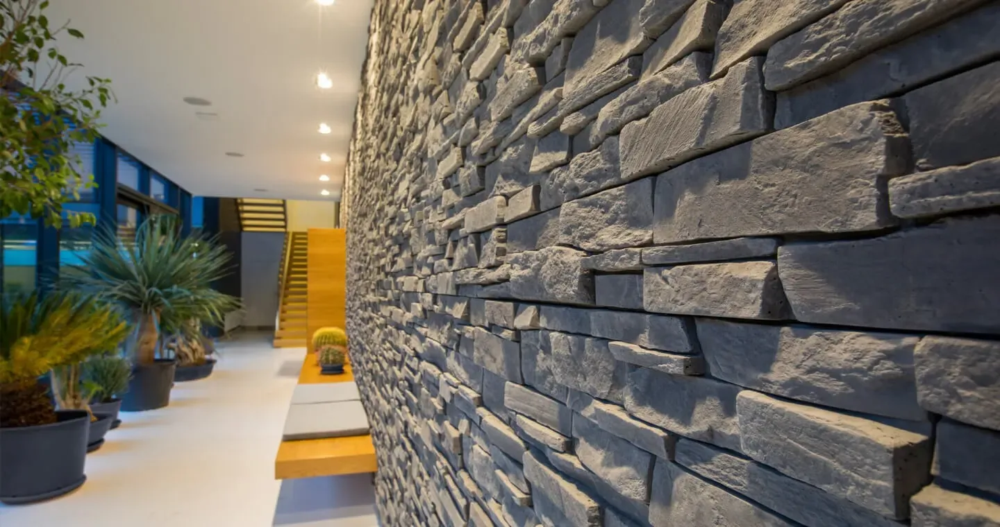
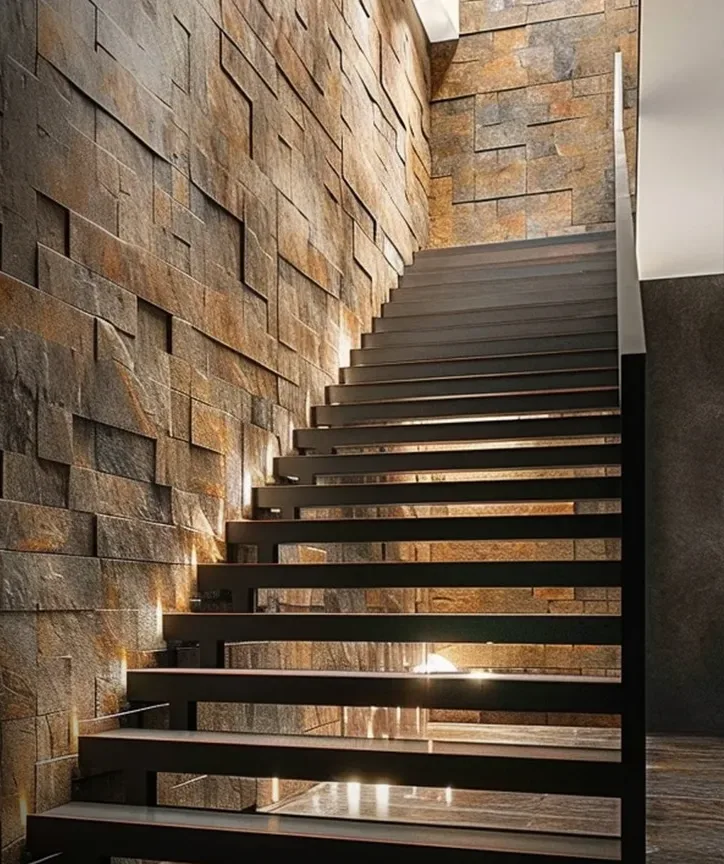
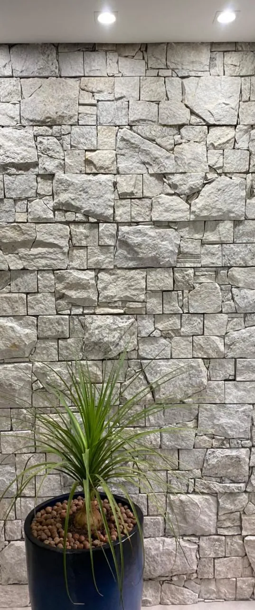
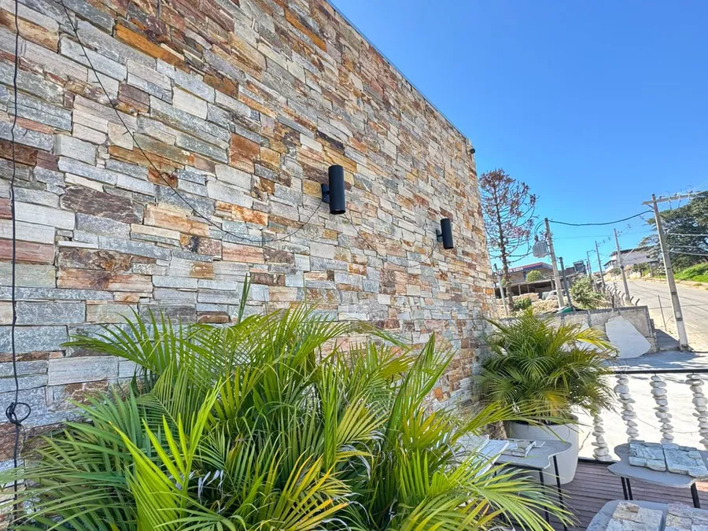
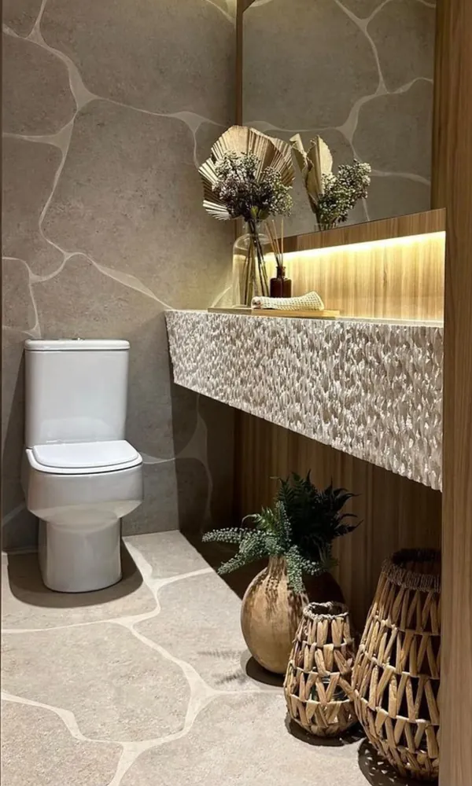

Três Corações, MG. Entrega para todo o Brasil.
Pedras naturais de alto padrão para pisos e revestimentos
Travertino Bege Bahia, Quartzito São Tomé e rochas nacionais e importadas selecionadas para obras de arquitetos, construtoras e clientes que não abrem mão de acabamento.
20 m² é o nosso pedido mínimo. Assim o frete compensa para você, em qualquer estado.
- Padrão exportaçãoRochas selecionadas
- Todo o BrasilEntrega em qualquer estado
- A partir de 20 m²Pedido mínimo
- Prazo em contratoSegurança para os dois lados
Travertino Bege Bahia em destaque
Uma pedra de luxo com beleza atemporal. Os tons de bege e a textura única deixam pisos, paredes e elementos de interiores com aquele acabamento que se nota de longe, sem precisar de exagero.
- Onde aplicar
- Pisos, revestimentos de parede e interiores
- Tonalidade
- Bege, com variação natural da rocha
- Entrega
- Para todo o Brasil, a partir de 20 m²



Escolha a pedra do seu projeto
Rochas nacionais e importadas. Toque no nome para ver as fotos.
Uma família que começou tirando pedra da serra
A Pedras Tricordiana nasceu em São Tomé das Letras, berço do quartzito que leva o nome da cidade. Hoje o Marcílio Francisco cuida do beneficiamento e da comercialização de rochas nacionais e importadas, com o mesmo olho de quem aprendeu a escolher pedra na origem.
- Anos 70O pai do Marcílio começa a extrair pedras em São Tomé das Letras, MG.
- Anos 90Marcílio conhece o processo de perto e passa a aprender o ofício.
- DepoisApós 15 anos como supervisor em uma multinacional, volta à origem das pedras naturais.
- HojeBeneficiamento e venda de rochas nacionais e importadas para obras de alto padrão em todo o Brasil.

Pedra natural aplicada
Paredes, escadas e ambientes revestidos com as pedras que trabalhamos.






Do orçamento à pedra na obra
- 1
Conte sobre a obra
Pedra de interesse, metragem e cidade de entrega. Se tiver projeto, melhor ainda.
- 2
Receba o orçamento
Com a pedra certa para cada ambiente e o frete até a sua cidade.
- 3
Contrato e sinal
O prazo de entrega fica definido em contrato. O sinal confirma o pedido.
- 4
Entrega e saldo
A pedra chega na obra e o saldo é pago no ato da entrega.
Peça o orçamento da sua obra
Preencha em menos de um minuto. A conversa continua no WhatsApp com quem entende de pedra.
- Arquitetos e designers de interiores
- Engenheiros e empreiteiros
- Construtoras e incorporadoras
- Clientes finais de obras de alto padrão
Atendemos pedidos a partir de 20 m².
Dúvidas que chegam todo dia
Qual a qualidade das pedras?
Trabalhamos com rochas selecionadas de extrema qualidade, padrão exportação.
Qual o pedido mínimo?
Atendemos pedidos a partir de 20 m². Abaixo disso o frete deixa de compensar para o cliente.
Vocês entregam fora de Minas Gerais?
Sim. Entregamos para todo o Brasil.
Qual o prazo de entrega?
O prazo é definido na assinatura do contrato, para segurança das duas partes.
Quais as formas de pagamento?
Sinal na confirmação do pedido e saldo no ato da entrega. Aceitamos cartão de crédito, PIX e boleto.
Qual o horário de atendimento?
Segunda a sexta, das 9h às 18h, e sábado, das 8h às 13h.